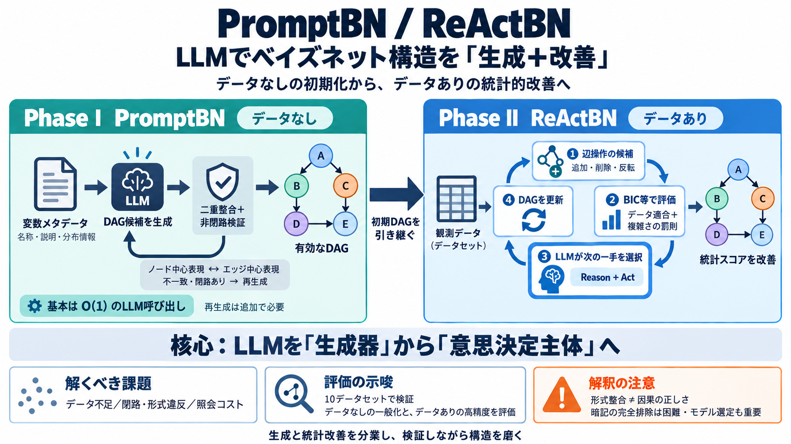

Bayesian statistics - Wikipedia
Bayesian statistics (/ˈbeɪziən/ BAY-zee-ən or /ˈbeɪʒən/ BAY-zhən) is a theory in the field of statistics based on the Ba…

Bayesian statistics (/ˈbeɪziən/ BAY-zee-ən or /ˈbeɪʒən/ BAY-zhən) is a theory in the field of statistics based on the Ba…
Computational Complexity: In some Bayesian methods can be computationally expensive in cases that are involved in MCMC o…
in the field of machine learning. [...] General What links here Related changes Upload file Permanent link Page in…
### Advertising & partnerships ### Professional development ### Regional websites Springer Nature © 2026 Springer Na…
The scientists were inspired by Bayesian experimental design, in which researchers interpret decision-making by estimati…